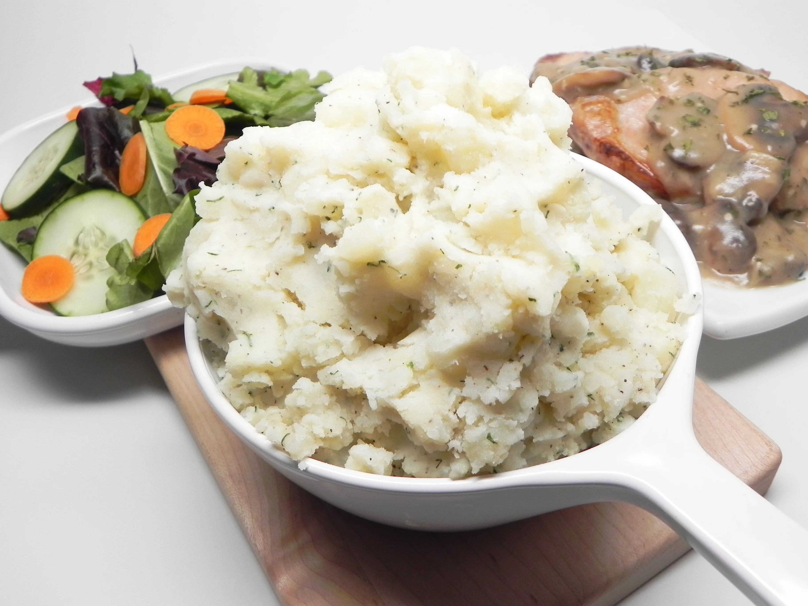

Buttermilk Mashed Potatoes

Description
This simple and easy to make Mashed Potato guide will make your mashed potatoes really POP at your next food event!
Ingredients
- 6 peeled white potatoes
- 3/4 cup buttermilk
- 3 tbsp butter
- 2 tbsp chicken boullion powder
- 2 tsp fresh dill, chopped
- Salt and Black pepper
Steps
- Place potatoes into a large pot and cover with salted water; bring to a boil. Reduce heat to medium-low and simmer until tender, 20 to 30 minutes. Drain and mash in a large bowl.
- Add buttermilk, butter, bouillon powder, dill, salt, and pepper and mash until creamy.
Credits to J from All Recipes.com for this simple and easy recipe to practice my coding
https://www.allrecipes.com/recipe/277614/buttermilk-mashed-potatoes/